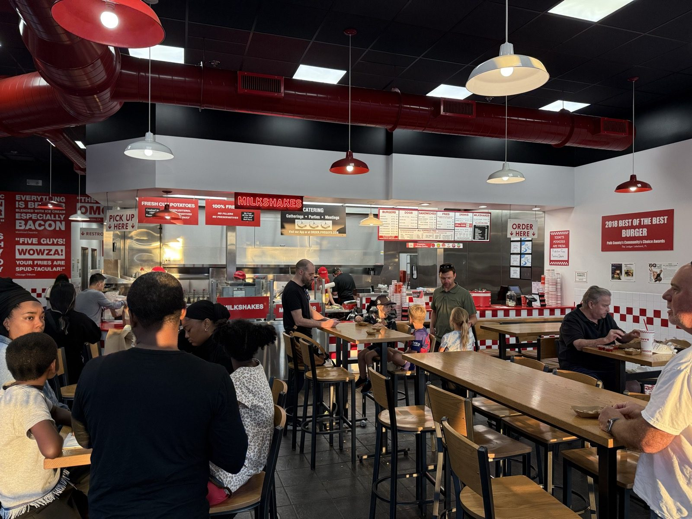
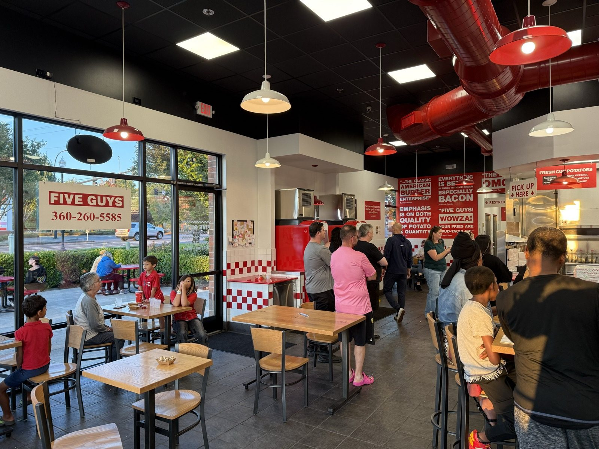
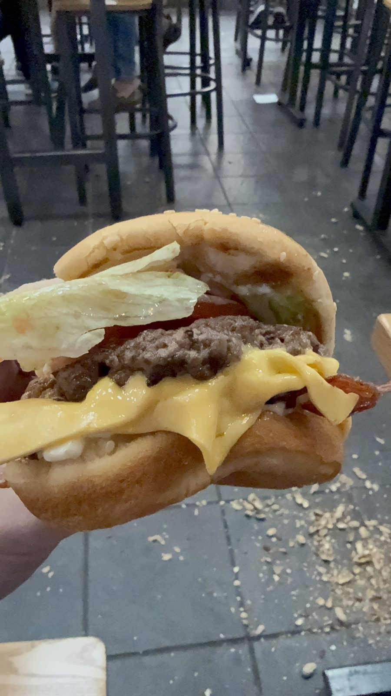

The Night It Ran Out of Everything, at Five Guys

Six o'clock on a Friday evening, National Cheeseburger Day, and the Five Guys on SE Mill Plain Boulevard in Vancouver, Washington had already run out of buns. And lettuce. And pickles. I didn't find any of that out until I was well into the wait, but it explains everything that happened between walking in the door and finally holding a cheeseburger two hours later (pictured above, the storefront lit up gold as the sun went down on all of it).
Why a burger took two hours on Cheeseburger Day
Five Guys had spent the three days ending tonight running a rare buy-one-burger-get-one-free deal for the holiday, code BOGOBURGER, good through the end of the day — the kind of promotion that pulls a lot more orders into one kitchen than a normal Friday does. One location running through its buns, lettuce, and pickles by early evening on the last day of a three-day nationwide burger deal isn't a mystery so much as simple arithmetic: more orders than the morning prep was built for, on a day built specifically to maximize orders. I don't know that for certain as the stated reason — nobody behind the counter stopped to explain it to a dining room this full — but the timing lines up too neatly to be a coincidence.

What that meant in practice: a dining room this packed (above), a line that didn't visibly move for long stretches, and — this is the detail I keep coming back to — an open box of free in-shell peanuts sitting out for anyone waiting, which is standard Five Guys practice on any ordinary night but did real work on this one. Two hours is a long time to stand around a fast-food counter. It's a much shorter two hours with a handful of peanuts to shell and a few strangers in the same boat to talk to. I had more than one conversation with people I'd never met before who were just as stuck as I was, and it's the kind of thing that makes a bad wait into a fine evening instead of a wasted one.


Is Five Guys worth the wait — and how does it compare to In-N-Out and Habit?
Here's the honest ranking, the way I'd say it at the table: it's yummy, and I'd order it again, but it comes in under both In-N-Out and Habit Burger & Grill, the other two chains I've already put through this notebook. Nothing about it went wrong tonight that the bun shortage didn't cause — once the kitchen had bread and produce flowing again, the cheese came out properly melted and the burger arrived looking exactly like a Five Guys burger is supposed to look. It's a genuinely good fast-food burger. It's just not, on my plate, quite as good as the other two, and three stars instead of three and a half or four and a half is me saying so plainly rather than splitting the difference.
That's a strange thing to write about a chain that a 2026 YouGov survey of American diners rated the most-loved fast-food burger in the country — ahead of Burger King, ahead of In-N-Out, ahead of Wendy's and McDonald's. Five Guys is also, by a separate 2025 industry ranking, the single most expensive fast-food chain in America, with an average order priced north of twenty dollars and climbing. So the honest picture is a chain that is simultaneously the country's favorite and its priciest, and neither of those numbers moved my own ranking. Popularity and cost aren't flavor, and on flavor alone I'd still reach for a Double-Double or a Double Char first.
Fresh, never frozen — and a name that started as five actual guys
The things Five Guys is known for were all genuinely on display tonight, ingredient shortage aside: potatoes hand-cut in-house rather than shipped pre-cut (a small sign behind the counter names whichever farm that day's shipment came from, a detail that changes daily), beef that the company says is never frozen anywhere in the supply chain, and fries cooked in 100% peanut oil, which is also the reason a peanut allergy and this particular chain don't mix, free shells on the floor or not. Toppings are free and close to unlimited — the company's own count is around 250,000 possible combinations across fifteen add-ons — which is the kind of number that sounds like marketing until you actually try to name a topping they don't have.
The name itself predates all of that. Jerry and Janie Murrell opened the first store in Arlington, Virginia in 1986, and the "five guys" were literal — Jerry and his four oldest sons, Jim, Matt, Chad, and Ben, with a fifth son, Tyler, born two years after the name was already on the sign. All five are still in the business today running different parts of it. It's a rare case of a chain name that isn't a pun or a founder's surname, just a plain count of who was standing behind the counter the day it opened.
How Five Guys has actually measured up before tonight
This isn't even the first time a magazine has tried to settle Five Guys against In-N-Out. Consumer Reports asked more than 28,000 subscribers to score fast-food burgers back in 2010, and Five Guys and In-N-Out tied for the top of an 18-chain list at 7.9 out of 10, with McDonald's dead last at 5.6. Four years later, a much larger 2014 Consumer Reports survey — the same one I've already written about — had Habit edging out In-N-Out instead, with Five Guys still rated among the better chains but no longer the outright winner. Two surveys, four years apart, two different answers. My own three-way ranking tonight makes a third.
The practical bit
Five Guys — 19171 SE Mill Plain Blvd, Suite 109, Vancouver, Washington 98683. 📍 Get directions
Hours: 10:30 AM – 10:00 PM, daily. Phone: (360) 260-5585 — though after tonight I wouldn't count on anyone picking up during a rush.
Worth knowing: National Cheeseburger Day (September 18, every year) and any nationwide BOGO promotion are exactly the days a single location can run out of basics. If the goal is a quick meal rather than a two-hour peanut-shelling social hour, skip the chain on its own promotional day.
The peanuts are free, the shells go on the floor, and on a night like this one, they're doing more work than the fryer.